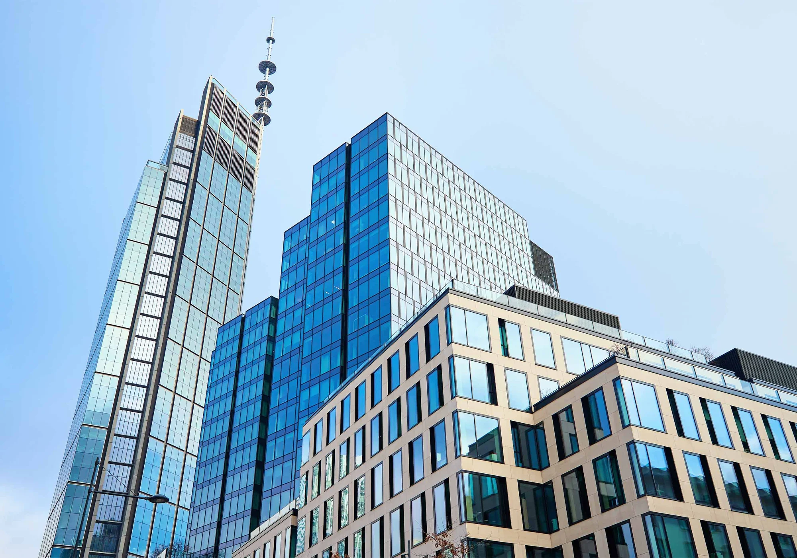

Our expertise to control your entrance!
The answer for you!
We promote the participation of everyone to achieve a common goal.
As a distinctive feature of our organization.
As a constant aimed at all of our clients.
We act with professionalism, moral integrity, loyalty, and respect for people.
Automatic entrances, turnstiles, traffic and security bollards, automatic barriers, high-security doors, mantraps, Simply Connect, pedestrian and vehicle access control.
Mantraps, high-security doors, automatic entrances, turnstiles, traffic and security bollards, automatic barriers, pedestrian and vehicle access control, Simply Connect.
Automatic entrances, turnstiles, traffic and security bollards, pedestrian and vehicle access control, Simply Connect, automatic barriers, mantraps, high-security doors.
Mantraps, high-security doors, automatic entrances, turnstiles, traffic and security bollards, automatic barriers, pedestrian and vehicle access control, Simply Connect.

Automatic entrances, automatic barriers, traffic and security bollards, Simply Connect, turnstiles, pedestrian and vehicle access control, mantraps, high-security doors.
Automatic barriers, traffic and security bollards, turnstiles, pedestrian and vehicle access control, Simply Connect, automatic entrances.
Automatic entrances, turnstiles, traffic and security bollards, automatic barriers, high-security doors, mantraps, Simply Connect, pedestrian and vehicle access control.
Hospital doors, automatic entrances, automatic barriers, turnstiles, pedestrian and vehicle access control, Simply Connect, high-security doors.
Automatic entrances, automatic barriers, pedestrian and vehicle access control, Simply Connect, traffic and security bollards, turnstiles.
Automatic entrances, automatic barriers, pedestrian and vehicle access control, Simply Connect, traffic and security bollards, turnstiles.